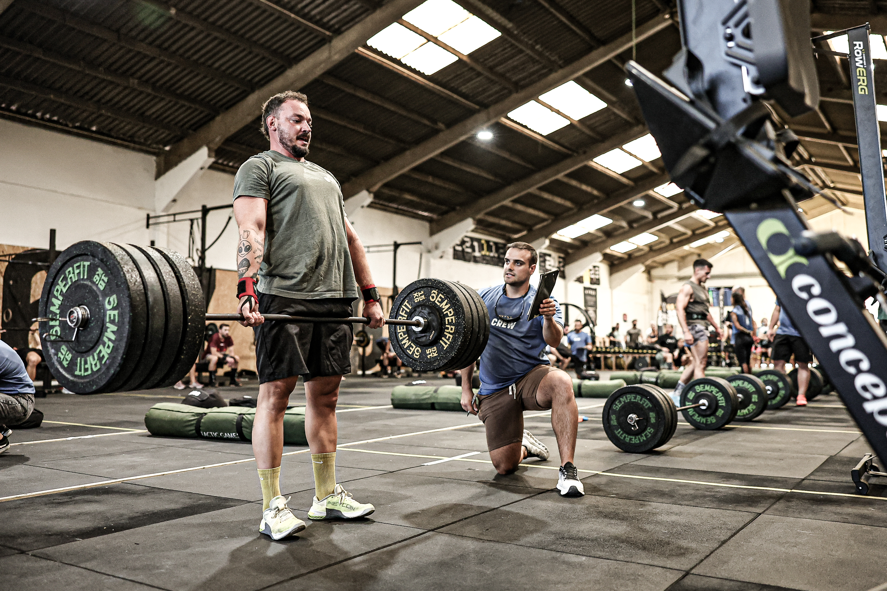
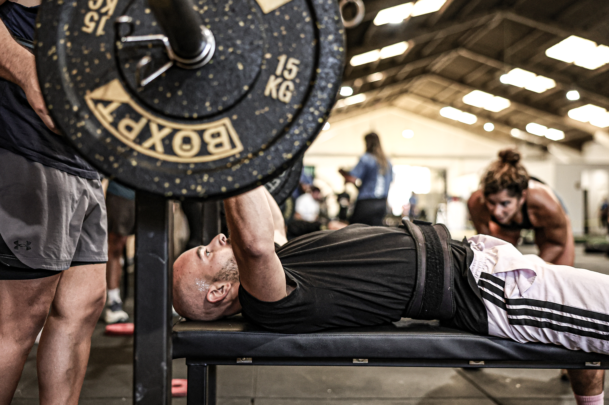

The second edition of Fusion Games brought functional-fitness competition to AVYNT Hybrid Arena in Vila Nova de Gaia on 10 October 2026. Box jumps, barbell work and shared challenges put strength, movement and coordination at the centre of the day.
In its published podium announcement, AVYNT placed Figueirenses e uma Scaled first, GRIT second and Fracos de Cabeça third. The organiser also thanked the athletes who took part in the edition. Those team names are retained as published, without assigning unverified scores or category labels.
From explosive movement to barbell strength
The three photographs selected for this report show distinct demands on the competition floor. Luis Moreira’s box-jump image captures an athlete’s movement against the arena’s yellow-and-black backdrop. Paulo Nômade’s photographs move closer to the barbell work: a standing deadlift and the concentration of a bench-press effort.

AVYNT’s event-day updates identified bench press, sandbag squats and deadlift among the workouts. A later update described a final challenge combining rowing, pulling movements and worm exercises, with pairs changing across three rounds. Together, the organiser’s account and the photographic coverage document both individual effort and the need to work alongside others.

Image Media coverage
Image Media covered the second edition through the work of Luis Moreira and Paulo Nômade. Their photographs provide an on-location record of movement, exertion and attention to each repetition, complementing the organiser’s published account of the competition.
Image Media coverage
Reporting: IM News Editorial Desk
Coverage photographers: Luis Moreira and Paulo Nômade / Image Media
Date and edition checked against the event listing; venue, workouts and podium checked against AVYNT’s official updates. Photographer credits confirmed by Image Media.